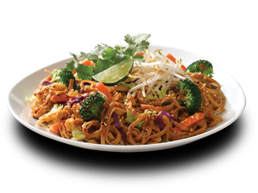
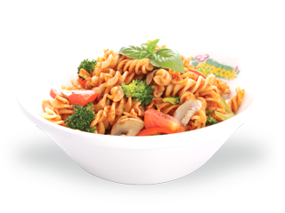
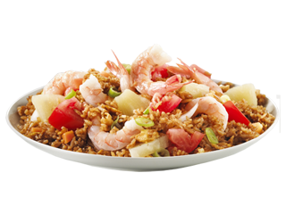
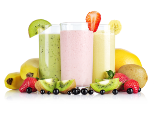
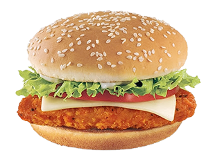
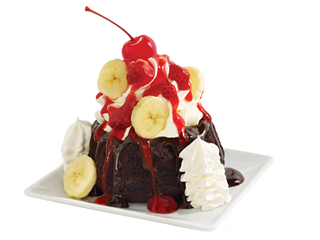

Let's Eat






Heritance Kandalama, Dambulla located in a serene area of the mountainside overlooking the Kandalama Lake and the Sigiriya Rock Fortress, provides guests an ambience of luxury and sophistication. Heritance Kandalama, Dambulla set amidst the all green tropical landscape and providing a host of luxurious facilities, guests always prefer to wander back to this dreamy location. From timber paneled rooms to an infinity pool and restaurants to relish local and international cuisine as well as luxurious spa treatments, the service quality of the hotel will always make you feel relaxed.